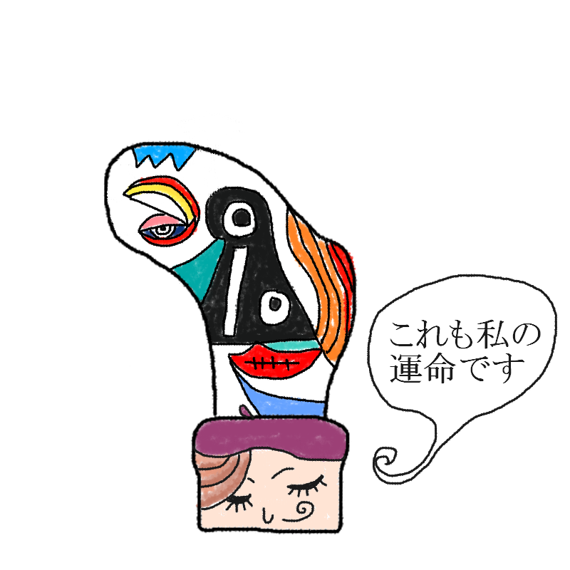

あなたの診断結果
？ ？ ？ （キャラクター名前募集中）足裏の土踏まずにあく人
【常識を覆す奇跡の穴！
靴下界のピカソ・死後に評価される孤高の芸術家型】

「私がここに穴をあけたのは、そうすべき運命だったからです。……ええ、ただのミスではありません、芸術です」
地面に触れないはずの聖域に刻まれた理解不能な穴！誰も真似できない奇跡のフットワーク！
あなたは、「周囲から『なぜそこで？』と理解不能な行動をとるが、実は常識に縛られない自由な発想の持ち主であり、将来的に大化けする可能性を秘めた天才型」です。
通常の歩行では地面に接地しない、いわば足の裏の聖域である「土踏まず」。
そこに穴をあけるなど、凡人には到底理解できません。
しかし、あなたにとっては、それは運命的なインスピレーションであり、必然的な表現活動なのです。
靴下の生地が擦れるのではなく、内側からの爆発的なエネルギーや、独自の歩法によって生じた奇跡の穴。その穴は、見る人には単なる破損に見えても、未来の美術史では「革命の第一歩」として評価されるかもしれません。
「今はまだ理解されなくてもいい」と、孤高の道を歩み続ける靴下界のピカソです。
あなたの特徴
- 地面に触れないはずの土踏まずに穴があくという、物理法則を超えたレアケース
- その穴は単なる摩擦ではなく、本人の独創的な歩行や哲学の具現化
- 奇抜すぎて周囲からは浮くが、本人は「芸術」として誇りを持っている
- 今はただのボロ靴下に見えるが、数年後には博物館に飾られるかもしれない（かもしれない）
最後にひとつ。
あなたの足の穴は、他の人とは違う生き方の証です。
「常識なんて踏み潰せ！」と土踏まずを浮かせているつもりが、逆に常識を芸術的に踏み破ってしまったあなた。
その偉大なる奇行を貫き通せ！ きっと未来は、その穴の意味を理解してくれるだろう。
このキャラクターに名前をつける
思いついた名前を教えてね！
※このスタンプには日陰に消えたボツキャラが混ざっています
※この診断はただのお遊びです。
※靴下の穴が開く場所には個人差があります。